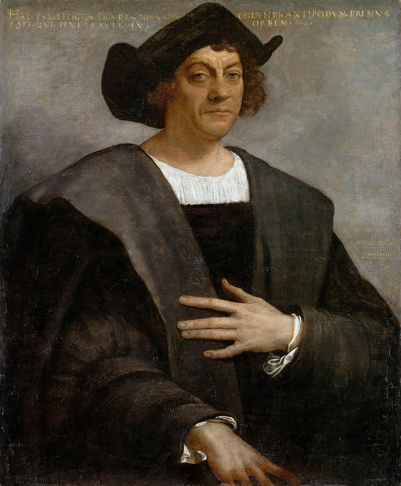

1. At the end of 15th century European trade relied on gold and spices from Asian continent. At the end of the 15th century, it was nearly impossible to reach Asia from Europe by land. The route was long and arduous, and encounters with hostile armies were difficult to avoid. Since the only way to get to Asia became blocked after Ottomans took over Constantinople,Europeans sought new and possibly shorter ways to Asia.
2. The Italian explorer named Christopher Columbus expounds his idea that he can reach India through the Atlantic Ocean to the Spanish king and queen. He eventually persuades the Spanish monarchs to sponsor his voyage across the unexplored Atlantic Ocean. On August 3 1492, Columbus and his crew On August 3, 1492, Columbus and his crew set sail from Spain in three ships: the Niña, the Pinta and the Santa Maria.

3. Columbus finally arrives in Hispaniola Island modern day Haiti and Dominican Republic, and back then he thought that he had reached India. By thinking that he had arrived in India, he named local people of the island Indians. His exploration and desire for gold led to the complete depopulation of local people in Hispaniola Island because they were very susceptible to European diseases.
Here is the list of famous explorers after Columbus
Hernan Cortes (Spanish)
Francisco Pizzaro (Spanish)
John Cabot (English)
Giovanni de Verrazano (Italian)
Henry Hudson (English)
4.Spain claimed vast amount of territory streatching from South America to modern day California and Florida
5.Dutch, French, and English claimed the territories of modern day Canada and East COast of the US
Part 2: The years of Revolutions in the America
1. From 1754 to 1763 The French and Indian War takes place in North America. This war ended with British victory whereby British acquired Canada and Spain acquired Louisiana
2. Since the War cost a lot of money for British, British parlament decided to impose various taxes and acts on 13 colonies which deeply enraged majority of the colonists. These acts led to Gaspee incident, Boston Massacre, Boston Tea Party.
The specific list of taxes and acts in chronological order
Sugar Act(1764)
Quartering Act(1765)
Stamp Act (1765)
Declaratory Act (1766)
The Townshend Act (1767)
The Coercive Acts (1774) It was the response to the rebellious behavior
Quebec Act (1774)
3. Soon after the fighting broke out in Massachusetts, delegates to the Second Continental Congress met in Philadelphia. One group of delegates argued that colonies should declare independence, another group advocated for peaceful negotiations and reconciliation with the British
4. Since not everyone in the 13 colonies were willing to fight for Independence, Thomas Paine published the pamphlet called "THe Common Sense". It had a profound impact on public opinion and future course of events
5. After meeting for more than a year, the congress gradually began to favor independence. On June 7, 1776 Richard Henry Lee introduced a resolution declaring colonies to be independent. THomas Jefferson wrote a statement in support of Lee's resolution. The congress adopted Lee's resolution on July 2; Jefferson's Declaration of Independence was adopted on July 4, 1776
I liked this book for its exciting plot and beatiful language. The book contains a lot of remarkable sentences as well as impotant themes. This book can create superb movies. I read it on my own then in my English class. Although I felt incredibly angry when I got to the end of the book, I was really glad that I felt emotions out of reading a book
The short summary and the background:
The book was published in 1925. When it was first published, it received criticism and horrible reviews because the majority of readers couldn't understand the book. As the years many people began praising the book. The story takes place in 1920s (years of prosperity, jazz and illegal liquor). THe main character is Nick Carraway who return back to the US from WWI. He has a cousin named Daisy who is married to the rich man named Tom. Nick has a rich neighbor named Gatsby. Gatsby is a new money(became rich recently), while Tom is the old money(inherited from his parents). Gatsby falls in love with Daisy with whom he had relationships before he went to war. Unfortunately for Gatsby, he would be unable to get Daisy back and dies. Tom persuades the mechanic named Adam that Gatsby killed his wife.
I liked this book it has historic facts as well as a lot of convincing argument for the US independence. After reading this book I was totally convinced for independence and began to wonder how was he able to write so compelling pamphlet. I also like the author of the book. He was a great thinker who was ahead of his time.
The summary and the background:
The pamphlet was written in 1776 during the year of American Revolution. In this pamphlet Thomas Paine essentially tried to convey that it is contrary to the common sense for the big continent to be ruled by a small island. The pamphlet was published to convince loyalists (people in the colonies faithful to the British crown) to consider independence. In 1776 the book had a profound effects on the people and a few months later The Declaration of Independence was written and submitted.
I liked this book for its interesting plot and valuable lessons. After reading this book I learned all the ramifications of dictatorship and totalitarianism. This book describes and predicted the life in totalitarian governments. In my opinion, this book should be widely read by all people in High Schools.
The summary and the background:
The book was written in 1949. Historically around 1940s and 1950s there was a rise of totalitarian governments and dictatorships. Author began having nightmares after becoming aware of the effects of totalitarian governments on the ordinary people. The story is in general about the middle aged man named Winston who eventually in the novel would dissent from the government's ideologies. Unfortunately, at the end of the novel he would get caught, tortured and released from education camps. Winston realized that there is no possible way to trick the totalitarian government. The most famous quote from the Book: "Big Brother is Watching You"